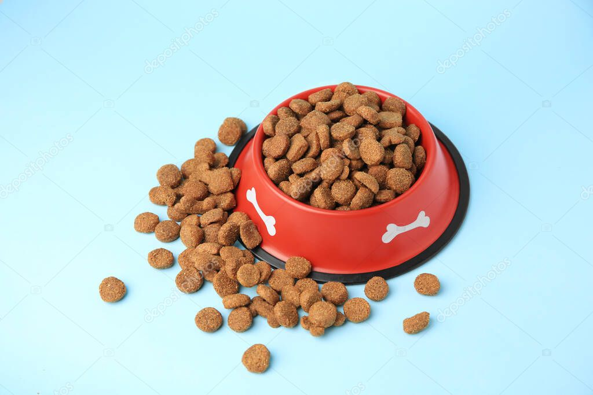
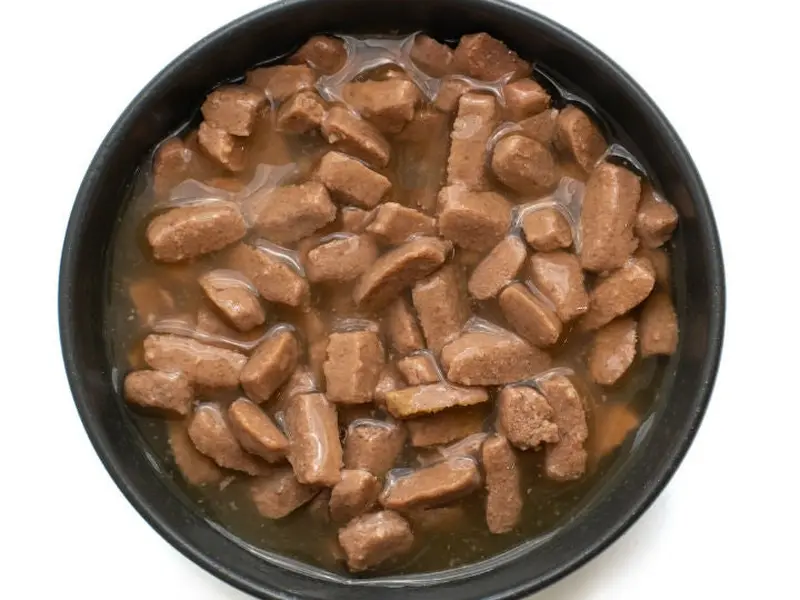
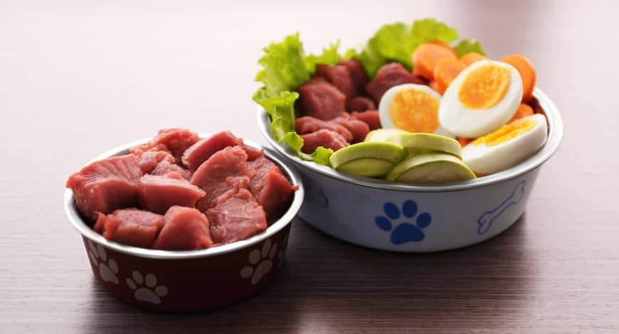

Cuidado Responsable
Cuidar bien a un perro es una responsabilidad que garantiza su bienestar físico y emocional. Esta guía ofrece consejos clave sobre alimentación, salud, ejercicio y socialización, promoviendo así una tenencia responsable que ayuda a prevenir el abandono y fomentar la adopción consciente.
Alimentación y Nutrición:
Una buena alimentación es el primer paso para cuidar la salud de tu perro. Conocer los tipos de comida y sus necesidades es fundamental.
Tipos de alimentos para perros:
- Comida seca (croquetas): Es la opción más común y conveniente. Ayuda a mantener la salud dental de tu perro. 
- Comida húmeda: Más sabrosa y útil para perros con problemas dentales o que necesitan aumentar su ingesta de agua. 
- Comida casera: Puede ser saludable si está bien balanceada para su raza y edad. 
Alimentos Tóxicos:
- Chocolate
- Cebolla
- Ajo
- Uvas
Consulta con un veterinario si tienes dudas.
Hidratación:
Asegúrate de que siempre tenga agua fresca, especialmente después del ejercicio.
Ejercicio y Actividad Física
El ejercicio es clave para que tu perro esté sano y feliz.
- Razas y ejercicio: Cada raza tiene diferentes niveles de energía. Los Border Collie y Labrador requieren más, mientras que los bulldogs menos.
- Juegos: No todo es caminar: jugar, lanzar la pelota o correr juntos fortalece el vínculo y es divertido.
- Beneficios: Previene obesidad, mejora salud cardiovascular y reduce ansiedad.
Salud y Bienestar:
- Visitas al veterinario: Al menos una vez al año. Incluye vacunas, desparasitación y control de pulgas.
- Higiene: Bañarlo, cortar uñas, y limpiar oídos y ojos.
- Signos de enfermedad: Pérdida de apetito, vómito, diarrea, cambios en piel o pelaje.
Cuidado Especial Según la Edad:
- Cachorros: Dieta rica en nutrientes, socialización temprana y chequeos frecuentes.
- Adultos: Energía equilibrada con ejercicio y descanso. Mantener rutina y chequeos.
- Mayores: Dieta ajustada, cuidados para movilidad, comodidad y visitas constantes al veterinario.